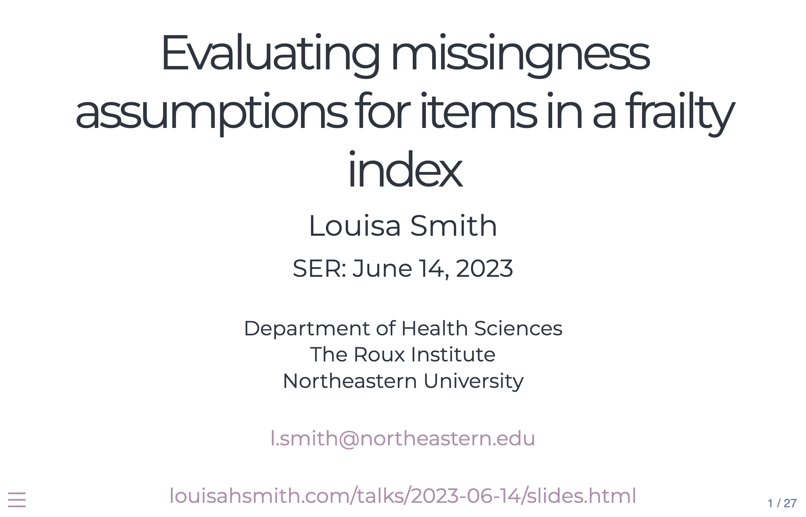
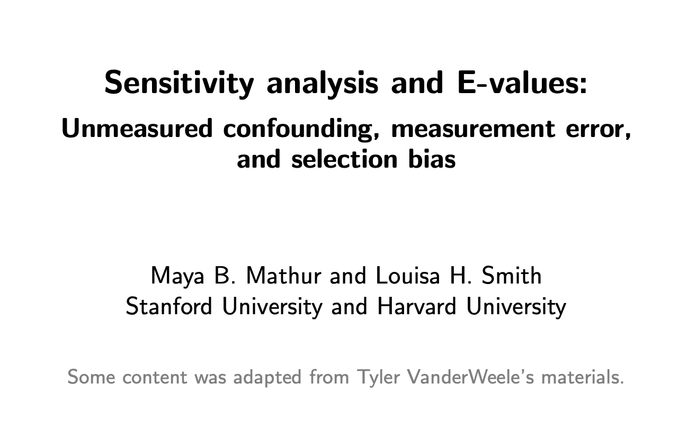

How much does missing survey data matter when constructing a frailty index?
SER pre-conference workshop
Overview of the targets package for reproducible data analysis.
targets
SPER Advanced Methods Workshop, with Chelsea Messinger
Target trials can help design better observational studies.
A framework for sensitivity analysis addressing unmeasured confounding, misclassification, and selection bias.
Avoiding various biases when studying COVID-19 and preterm birth, presented in the infectious diseases session at SER 2021.
Speed presentation on the timing- and severity-specific effects of COVID-19 on preterm birth.

Pre-conference workshop with Maya Mathur.
My dissertation defense!
Extending a sensitivity analysis approach for unmeasured confounding to selection bias.
A guest lecture to convince new learners of R just how cool it is.
A data science/human interest story first shared at RLadies Boston.
The basics of DAGs.